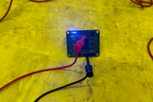
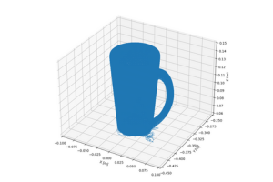
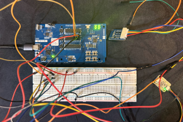
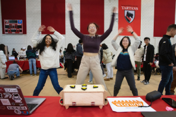
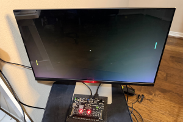
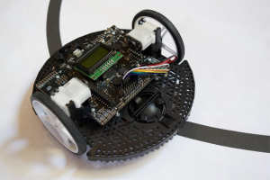

Embedded Systems @ CMR
Designed and currently testing our Dynamics Controller Module, responsible for vechicle controls and cooling loop. Also designed PCBs for our CAN-based data acqusition pipeline.
Altium Designer, STM32 SoC, FreeRTOS
View Documentation →

3D Image Segmentation
Wrote a program that, given a prompt and a dataset of object perspectives, segments the desired object from its surroundings and constructs a 3D point cloud representation.
OpenCV, NumPy, Segment Anything Model

Chron Smartwatch
Building a smartwatch from scratch. Capabilities include step counter, heart rate monitor, oximeter, temperature + pressure, raise-to-wake, wireless communication over Bluetooth Low Energy.
C, ZephyrRTOS, nRF54l15 SoC, BLE
View Documentation →

Wake 'n' Shake Alarm
Built an alarm clock to help people like myself get up in the morning. It only stops ringing when you complete a mental or physical task, such as a memory game or pushups.
Raspberry Pi, OpenCV, MediaPipe
View Documentation →

FPGA Pong
Designed a hardware implementation of Pong, synthesized on an FPGA. Includes a VGA interface for the display.
SystemVerilog, Xilinx Vivado, VGA

Fun With Robots Lab Exercises
Starter code for the robotics course I teach.
C++, Arduino, Romi 32U4 Control Board
View Documentation →